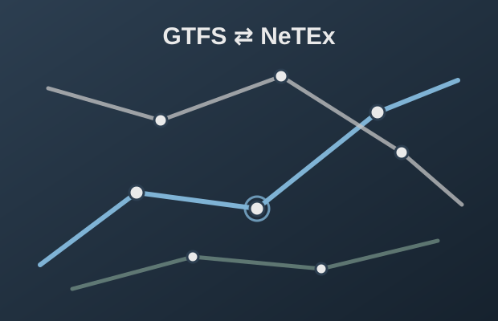
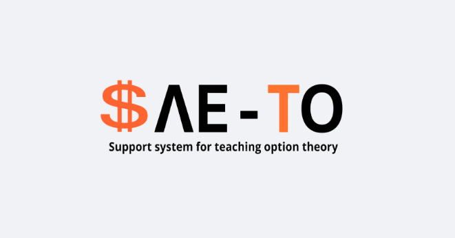
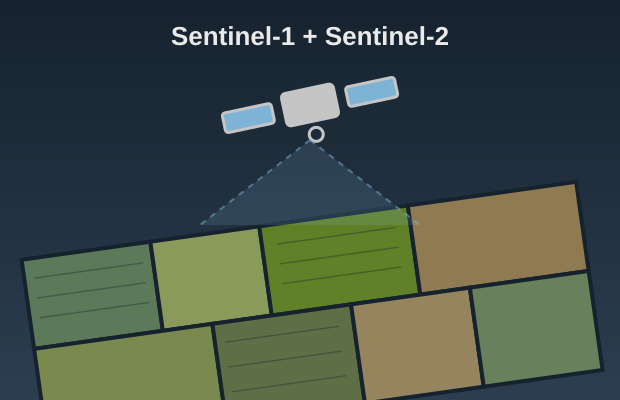
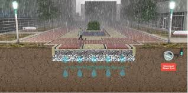
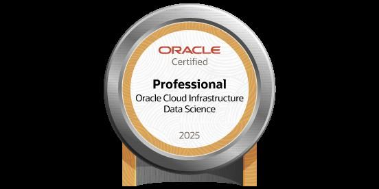

My Work, Projects and Certification

PID-Transit — GTFS ⇄ NeTEx Interoperability Toolkit
Open-source toolkit and web application that helps transit agencies produce and validate data compliant with the GTFS and NeTEx / Transmodel standards. Software registration in progress at NPI/UTFPR; the core of my M.Sc. thesis.

$AE-TO — Financial and Real Options Analysis Platform
A Django-based web application for real- and financial-options analysis (Black–Scholes model), used as decision-support material in graduate Economic Engineering courses at UTFPR. Nominated by PPGEPS for the national ENPPEPRO event.
Public Transport Demand Forecasting for Smart Cities
A comparative analysis of SARIMA, Random Forest, LSTM, and CNN models for public transportation demand forecasting in a data-scarce Brazilian city. Presented at the 20th SDEWES Conference in Dubrovnik, Croatia.

Land-Use Classification from Satellite Imagery
Machine-learning model for agricultural land-use classification, combining Sentinel-2 multispectral optical imagery with Sentinel-1 SAR backscatter features to improve crop-type discrimination accuracy.

SWMM Pavement Simulation and Sensitivity Analysis
Automated thousands of hydraulic simulations by scripting the US EPA SWMM engine in Python for a sensitivity analysis of permeable-pavement modules — my Civil Engineering final-year thesis.
Stock Price Analysis Web App
A full-stack application built with Next.js and Django that allows users to search, visualize, and analyze historical stock price data with an interactive and responsive interface.

Oracle Cloud Infrastructure 2025 — Certified Data Science Professional
This certification validates the ability to implement machine-learning solutions on OCI and incorporate best practices for specific business use cases, demonstrating expertise in the field.
Work and Projects Experience
My professional and research journey across software engineering, data, and sustainable mobility.
Full Stack Engineer
SoftFocus
Feb 2024 – April 2025
Contributed to a SAAS product using Django and Angular, where I optimized backend performance, designed scalable database schemas, and collaborated on implementing a modern, responsive UI.
- Engineered RESTful APIs with Django and PostgreSQL to support new product features.
- Developed and maintained the integration of an Angular front-end, serving thousands of active users.
- Working with CI/CD pipelines and Dockerized deployments.
Backend / Data Engineer
SoftFocus
May 2025 – Present
Designing and operating scalable ETL data pipelines that feed data-analysis, socio-environmental, and credit-risk services for financial institutions, with a focus on distributed systems and cloud-ready infrastructure.
- Built ETL pipelines with PostgreSQL, Apache Airflow, Apache Kafka, RabbitMQ, and Amazon S3.
- Implemented high-performance microservices using FastAPI to handle asynchronous data processing.
- Created asynchronous task queues with Celery and Redis to manage long-running background jobs.
- Implemented data-security and compliance measures: sensitive-data encryption and dependency hardening, working toward ISO 27001.
- Trained and deployed machine-learning models using MLflow, TensorFlow, and Python.
Researcher — OPTISUS-IA Project
UTFPR · Unicamp · Polytechnic Institute of Porto · University of Minho
Ongoing · Funded by CNPq
International research project between Brazil and Portugal to develop an integrated artificial-intelligence tool for optimizing sustainable public-transport systems.
- Developing research on sustainable mobility transition and network optimization using machine-learning and AI models.
- Built statistical and deep-learning models and software for the public-transit sector, working directly with real operator data from Brazil and Portugal.
- Researching data standards for intermodality and public-transit management and regulation (GTFS, NeTEx, Transmodel).
- Collaborating across four institutions in two countries, with participation in international conferences and events.
Education
M.Sc. in Industrial and Systems Engineering
2024 – 2026 (expected)Federal University of Technology – Paraná (UTFPR), Brazil
- Thesis: Smart Data for Public Transit: an open-source library for digital transition and GTFS–NeTEx interoperability, supervised by Prof. José Donizetti de Lima.
- Focus: software development, machine learning applied to public transportation, smart cities, financial methods in Python, time-series and deep-learning models, and transit-data pipelines.
- Current grade average: 9.2 / 10.0.
B.Sc. in Civil Engineering
2017 – 2023Federal University of Technology – Paraná (UTFPR), Brazil
- Final-year thesis: sensitivity analysis of permeable pavements via automated hydraulic simulation with the US EPA SWMM.
- Exchange: Sandwich Program at the Shibaura Institute of Technology, Japan (2023).
- Focus: automation scripting, sustainable development, LID technology, water management, and green cities.
Publications & Awards
Journal Articles (in preparation)
- "Towards Smart Transportation Systems: A Transmodel-Based Open-Source Toolkit for GTFS–NeTEx Interoperability." Target journal: Public Transport (Springer). In preparation for submission, 2026.
Peer-Reviewed Conference Papers
- "Forecasting Public Transport Demand for Resilient and Sustainable Smart Cities." 20th SDEWES Conference, Dubrovnik, Croatia.
- "Introducing $AE-TO: A Support System for Learning Options Theory." EPPGEP 2025 — 9th Meeting of the Graduate Program in Production Engineering, UTFPR.
- "Previsão da Demanda de Transporte Público para Cidades Inteligentes Resilientes e Sustentáveis." Semana Tecnológica 2025, UTFPR. In Portuguese.
- "Apresentando $AE-TO: Sistema de Apoio ao Ensino de Teoria das Opções." Semana Tecnológica 2025, UTFPR. In Portuguese.
Conference Presentations
- "From Collection to Strategic Planning: A Conceptual Data Pipeline Framework for Public Transportation Forecasting." Oral presentation, ICEE 2026 — Energy & Environment, Porto, Portugal.
- "Introducing $AE-TO: A Support System for Learning Options Theory." Presentation, ENPPEPRO 2025.
Awards & Honours
- 2025Technological product $AE-TO nominated by PPGEPS for ENPPEPRO, a national event of the Brazilian Association of Postgraduate Studies and Research in Production Engineering (ANPEPRO).
- 2025Honourable Mention, Technology Week 2025 (Semana Tecnológica), UTFPR.
- 2013Silver Medal, Brazilian Physics Olympiad for Public Schools (OBFEP).
Get In Touch
I'm always open to discussing new projects, research collaborations, and opportunities. Feel free to reach out!
Email Me